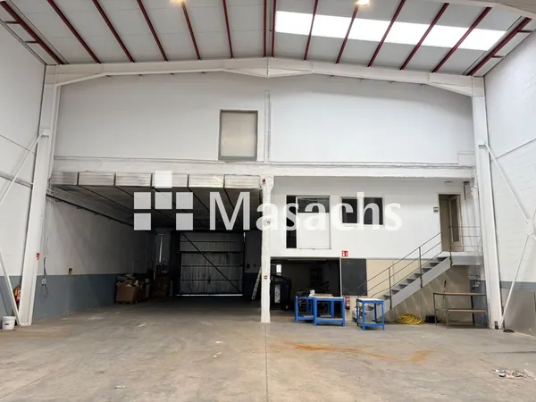
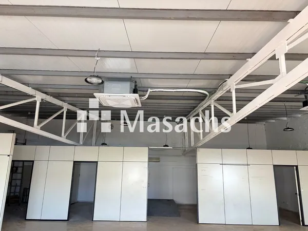
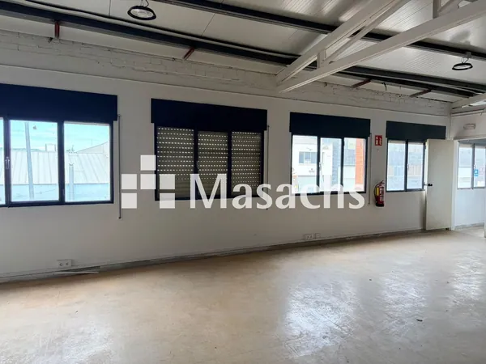

Plano · tocar un número de la lista lo marca acá
Letras: condiciones go/no-go · o: obra necesaria · números: lo que hay que medir o confirmar · c: lo que el chequeo de circulación marca hoy · trazos: el área o la franja de la cota · la línea azul: el largo libre a lo largo de la pista · ejes x/z: el origen de las cotas.
Condiciones go/no-go · si alguna sale mal, la nave se cae o hay que rehacer el layout
- Con margenDecide: ≥ 6,5 m libres bajo jácenas, cerchas, luminarias e instalaciones en la vertical de la plataforma: plataforma a 3,7 m + 2,4 m del rider + 0,4 m de instalaciones (PROGRAMA §1). Si da menos, se baja la plataforma (a lo medido − 2,8 m), nunca el run-out.Altura libre medida con láser sobre la plataforma (m):
5 notas del layout
fuente de la cota: foto 036 con la cámara resuelta (f≈1230 px, ojo a 1,8 m) y el testero a escala por las hiladas de bloque de 0,20 m (≈43 px/m): canto superior de la jácena en el alero ≈8,6 m y en la cumbrera ≈8,9 m, canto inferior ≈8,25 m y cartela del alero ≈7,8 m junto al pilar. El anuncio publica 8,60 m libres (coincide con el alero, no con el canto de la cartela); se toma la más conservadora, 7,8 m bajo cartela
riesgo: Trampolines fuera: las 2 camas de 5,2 × 3,05 m con 1,5-2 m de colchonetas piden ≥ 6 × 13 m, y no caben en la franja de 2,9 m sin quitar una línea de pista. El bloque de oficinas no da la altura. Quedarían para una nave más ancha.
riesgo: La altura libre medida en la foto 036 es de ≈7,8 m bajo la cartela del alero y ≈8,25 m bajo la jácena (el anuncio da 8,60 m). La plataforma a 3,7 m cumple igual (3,7 + 2,4 = 6,1 ≤ 7,4), pero hay que medirla en obra antes de dimensionar luminarias, redes y la barandilla de la plataforma.
supuesto: Cubierta (match foto 036): alero a 8,65 m y cumbrera a 8,95 m (≈4 %), medidos sobre el canto superior de las jácenas. La altura libre es de 7,8 m bajo la cartela del alero (el anuncio da 8,60 m, que coincide con el alero). Forjado de la planta 2ª a 5,6 m con viga de borde de 0,7 m de canto (de ≈4,85 a 5,6 m, foto 01) y volumen hasta 8,6 m; planta 1ª a 2,25 m (foto 01: ≈2,3-2,4 m).
supuesto: Ventanas de la planta 2ª (foto 03): los anchos, el número de hojas y las separaciones salen de la foto, pero no se ve ninguna esquina de la fachada, así que la posición absoluta es supuesta: la sala de 4 ventanas arranca a ≈0,6 m del lateral x=14,85 (a la izquierda de la foto, mirando a +z; por la 1ª ventana se ve de refilón el tejado de la nave vecina de ese lado) y el tabique de la puerta queda en x ≈ 5,0. match3: con la cámara resuelta de la foto 03 los marcos miden ≈1,8 m con ≈0,55 m entre ellos (antes 1,95 y 0,62, a la escala de un antepecho de 1,0 m); con el borde de la 1ª a ≈0,6 m del lateral, la celosía que llega a la fachada entre la 2ª y la 3ª ventana (x_img ≈912) cae en x ≈ 9,8, lo mismo que da la foto 04 (9,8 ± 0,3; ver crossCheck «match3: fotos 02 y 04»): las dos referencias coinciden. Ventanas en x 12,44-14,24 / 10,10-11,90 / 7,75-9,55 / 5,41-7,21 (la 4ª la tapa en parte la hoja abierta de la puerta) y la de la sala contigua desde x ≈4,83, con su ancho supuesto. Quedan sin dibujar los cajones de persiana y las 3 hojas: el visor reparte un montante cada ≈1,2 m (2 hojas en 1,95 m) y no tiene cajón
- Se decide en la visitaDecide: ≥ 27,7 m en línea recta a lo largo de la pista (plataforma 1,8 m, rampa, llano y el final más largo, run-out ≥ 8 m), del muro detrás de la plataforma a la escalera existente después del final. Si da menos, se acorta la rampa o el llano y se baja la plataforma, nunca el run-out.Distancia del muro a la escalera existente, a lo largo de la pista (m):
- Se decide en la visitaDecide: Dos salidas o más a la calle o a un espacio exterior seguro, con recorridos de evacuación ≤ 50 m (CTE DB-SI 3 §3, tabla 3.1), y sus puertas con ≥ 0,80 m de paso y 2,10 m bajo el dintel. Cada salida nueva solo vale si el muro da a la calle o a un patio con salida y la propiedad deja abrirla (las obras, en «Obra necesaria»).
- acceso acristalado de 1,2 m en la arista 2 (hueco 0, x 8,3 · z 44): nueva (hay que abrirla) · obra o1
- salida de emergencia de 1 m en la arista 1 (hueco 2, x 14,85 · z 24,42)
- salida de emergencia de 1 m en la arista 1 (hueco 8, x 14,85 · z 11,4): nueva (hay que abrirla) · obra o2
Salidas confirmadas (cuáles, a dónde dan, ancho de paso):5 notas del layout
riesgo: Evacuación: desde la plataforma hasta la fachada por el paso hay unos 50 m. La segunda salida depende de que el hueco del lateral x=15 (vídeo) sea una puerta a exterior. Si ese lateral es medianera, hay que abrir otra salida (en el testero junto al pad, si da a exterior) o justificar con rociadores. La TIR no cuenta como salida de evacuación.
riesgo: El final de la pista queda a 0,3 m de la escalera existente de la planta 1ª (detrás del deck del quarter de L1, que lleva barandilla) y a 1,3 m del frente de oficinas (1,2 m junto al pilar de gotelé). Por ese paso se va al gym y a la oficina, y a él salen los riders de L2-L3 por la salida de 1,2 m del run-out (x 8,45-9,65): hace falta red de fondo en z 27,7 y forrar la escalera.
riesgo: v2: el quarter pasa a L1 y el cajón de iniciación desemboca en él. Los principiantes de L1 frenan en la transición (1,2 m) o salen cruzando el final del run-out de L2-L3 hacia la salida de x 8,45-9,65. Otra opción sería cambiar el cajón y el rail de línea, pero la demo del rider va en el primer rail de la lista.
riesgo: transitable (25/11, rp-evac-b; walk: la `evacuation alternative` de 32,8 m, cerrada con una propuesta): desde el rincón oeste de la plataforma (0,9, 0,3) los recorridos a las dos salidas se abrían recién en el retorno, en (10,4, 21,7), cuando la salida 2 queda a la vista (DB-SI 3 tabla 3.1: 25 m hasta un punto con dos recorridos alternativos). La plataforma (≈9,5 m) y su escalera (≈11 m) ya son ≈20,6 m hasta el pie (z 9,2), y del retorno no sale nada antes salvo el paso de 1,2 m entre el pad y el lounge, ciego contra el lateral: no hay replanteo que lo baje (girar los muebles del lounge y las taquillas hacia el retorno no abre un paso de 1,00 m a lo largo del lateral: 34,0 m). Obra necesaria (decisión de negocio): una salida de emergencia de 1,0 m en el lateral x=15 al fondo de ese paso (hueco 8, `proposed`; el extintor del pad pasa a z 12,1): 22,8 m hasta dos recorridos y 29,0 m de evacuación (antes 36,7). Con la misma duda que la salida 2: que el lateral dé a exterior. Sin ella, rociadores (+25 %: 31,3 m) tampoco bastan.
supuesto: La pista va junto al lateral x=0 para dejar libre la boca del paso. La escalera de 2 tramos va en x 9,65-11,45, pegada a la plataforma, y el retorno en x 9,92-11,8 (1,88 m), fuera de la franja del murete. La franja de 2,75 m entre el retorno y los pilares de x=15 lleva, del testero hacia las oficinas: el pad, un paso transversal de 1,2 m, el lounge frente a los módulos, las taquillas, el paso libre a la salida de emergencia y el café junto al final de pista.
- Se decide en la visitaDecide: Huella ≥ 0,28 m, contrahuella de 0,13 a 0,185 m y 0,54 ≤ 2C + H ≤ 0,70 (CTE DB-SUA 1 §4.2.1); ancho ≥ 1,20 m (PROGRAMA; el CTE pide 1,00-1,10); tramos de ≤ 2,25 m sin descanso. Una escalera existente que no cumple no sirve para el público (gym o altillo): hay que rehacerla o poner otra.
- de la plataforma (escalera-plataforma): huella 0,28 m, contrahuella 0,17 m, ancho 1,55 m, tramo de 1,85 m sin descanso, sube 3,7 m
- existente (escalera-existente): huella 0,23 m, contrahuella 0,17 m, ancho 0,86 m, tramo de 2,25 m sin descanso, sube 2,25 m
Huella × contrahuella × ancho de la escalera existente (m):9 notas del layout
riesgo: La oficina de la planta 1ª no es accesible en silla de ruedas (la ficha dice «sin ascensor») y la escalera metálica existente es estrecha: 0,84 m útiles (walk), y al pie la deja en 0,78 m el extintor existente del tabique beige. Con solo la oficina arriba es de uso restringido (CTE DB-SUA 1 §4.1: sus peldaños de 0,173 × 0,235 cumplen) y el paso angosto queda como aviso, no como error de un recorrido de público. Si algún día la 1ª lleva público, hay que rehacer la escalera (1,20 m) o poner una plataforma elevadora.
riesgo: El final de la pista queda a 0,3 m de la escalera existente de la planta 1ª (detrás del deck del quarter de L1, que lleva barandilla) y a 1,3 m del frente de oficinas (1,2 m junto al pilar de gotelé). Por ese paso se va al gym y a la oficina, y a él salen los riders de L2-L3 por la salida de 1,2 m del run-out (x 8,45-9,65): hace falta red de fondo en z 27,7 y forrar la escalera.
riesgo: transitable (24/11, walk: de los 2 errores de entonces, 0): (1) el retorno de 1,8 m dejaba 1,65 m libres entre la huella de la pista con el margen de las redes (x 9,925) y la utilería de la franja; pasa a x 9,92-11,8 (1,88 m dibujados, 1,90 libres) y el pad, el lounge, las taquillas y el café se corren 0,15 m hacia x=15 (2,75 m de ancho: el pad pierde 1,6 m², las taquillas 0,95, el lounge 0,8 y el café 0,4). (2) Al gym de la 1ª se llegaba por 0,78 m (la escalera existente tiene 0,84 útiles: walk la mide como pasillo de público, ≥ 1,00 m): baja al bajo de la 2ª junto a la fachada (7,1 × 3,65 = 25,9 m², 8,3 menos que los 34,2 de la 1ª, a pie de calle y sin escalones: walk 1,33 m), con el equipamiento contra el muro de la 1ª. Obra necesaria: un hueco de 1,3 m en el muro (supuesto) entre el vestíbulo y ese bajo, en z 42,35-43,65, si hoy no tiene acceso: es una decisión de negocio (el otro camino es dejar el gym fuera o rehacer la escalera de la 1ª). Los datos ya lo llevan abierto (`muro-paso` termina en z 42,35 y `muro-paso-fachada` sigue en z 43,65): una partición no puede ser `proposed`, así que walk y layoutIssues cuentan ese paso como si ya estuviera. En total, el programa fuera de la pista baja de 241 a 230 m² (validateLayout). El extintor del vestíbulo pasa de z 42,2 a 41,8 en el mismo muro. Queda un error que el comprobador mide desde b1c7ff5f (las puertas de lo existente como puertas): la puerta de la 1ª sobre la meseta de la escalera, de 0,80 (foto 01), deja 0,73 m libres con la hoja abierta (≥ 0,80). Es obra existente y con la 1ª solo para el personal: obra necesaria, ensancharla a 0,90 (decisión de negocio).
riesgo: transitable (25/11, rp-evac-b; walk: la `evacuation alternative` de 32,8 m, cerrada con una propuesta): desde el rincón oeste de la plataforma (0,9, 0,3) los recorridos a las dos salidas se abrían recién en el retorno, en (10,4, 21,7), cuando la salida 2 queda a la vista (DB-SI 3 tabla 3.1: 25 m hasta un punto con dos recorridos alternativos). La plataforma (≈9,5 m) y su escalera (≈11 m) ya son ≈20,6 m hasta el pie (z 9,2), y del retorno no sale nada antes salvo el paso de 1,2 m entre el pad y el lounge, ciego contra el lateral: no hay replanteo que lo baje (girar los muebles del lounge y las taquillas hacia el retorno no abre un paso de 1,00 m a lo largo del lateral: 34,0 m). Obra necesaria (decisión de negocio): una salida de emergencia de 1,0 m en el lateral x=15 al fondo de ese paso (hueco 8, `proposed`; el extintor del pad pasa a z 12,1): 22,8 m hasta dos recorridos y 29,0 m de evacuación (antes 36,7). Con la misma duda que la salida 2: que el lateral dé a exterior. Sin ella, rociadores (+25 %: 31,3 m) tampoco bastan.
supuesto: Sentido de bajada +z: la plataforma va contra el testero ciego (8,6 m libres, sin huecos y con el mural encima) y la pista termina frente al bloque de oficinas, junto al café y a la boca del paso, a la vista de la oficina de la planta 1ª. Al revés no entra: la plataforma taparía la escalera y las ventanas de la planta 1ª, o la boca del paso.
supuesto: La pista va junto al lateral x=0 para dejar libre la boca del paso. La escalera de 2 tramos va en x 9,65-11,45, pegada a la plataforma, y el retorno en x 9,92-11,8 (1,88 m), fuera de la franja del murete. La franja de 2,75 m entre el retorno y los pilares de x=15 lleva, del testero hacia las oficinas: el pad, un paso transversal de 1,2 m, el lounge frente a los módulos, las taquillas, el paso libre a la salida de emergencia y el café junto al final de pista.
supuesto: Plantas altas: en la planta 1ª (y = 2,25) solo va la oficina/staff (con botiquín), por la escalera metálica existente, de uso restringido. El mini gym va en planta baja, en el bajo de la 2ª junto a la fachada (x 0,15-7,35, z 40,1-44, ≈4,9 m libres), con entrada desde el vestíbulo (ver risks, «transitable»). En la recepción hay un botiquín de mano para la pista. La planta 2ª (225 m²) queda sin uso. El taller de tuning y el almacén de módulos van bajo la plataforma y el primer tramo de rampa (≈40 m² con ≥2,5 m), con acceso por el pie de la escalera: no se dibujan porque caen dentro de la huella de la pista.
supuesto: El extintor ext-plataforma va a la cota de la meseta de llegada (+3,7 m), en el testero junto a la escalera; el visor lo dibuja a 1,2 m del suelo.
supuesto: plantilla Stoke Mountain adaptada: plataforma 3.7 m × 1.8 m; drop-in de 1.17 m en 3.3 m; 2 terraza(s) de 4.4 m que caen 5° unidas por drops de 0.86 m en 2.6 m; carril de transición en la línea 1 (bajada de 9.52 m, kicker Accelerator y 0 rollers de 0,3 m); 4 módulos a escala real por terraza (T1 cajones cortos, T2 cajón largo / rail / roller, down rail en el último drop), solo donde se llega con velocidad (µ 0,09); misma huella, mismos finales (run-out ≥ 8 m / quarter) y escalera; los módulos anteriores quedan en slope.legacyModules.
- Se decide en la visitaDecide: Ningún pilar dentro de la pista; los de la franja de 0,2 m del murete y la red, forrados (el murete se corta en cada uno); el pasillo de retorno, ≥ 1,80 m libres con los pilares.Posición y sección de los pilares junto a la pista (m):
2 notas del layout
riesgo: El final de la pista queda a 0,3 m de la escalera existente de la planta 1ª (detrás del deck del quarter de L1, que lleva barandilla) y a 1,3 m del frente de oficinas (1,2 m junto al pilar de gotelé). Por ese paso se va al gym y a la oficina, y a él salen los riders de L2-L3 por la salida de 1,2 m del run-out (x 8,45-9,65): hace falta red de fondo en z 27,7 y forrar la escalera.
riesgo: Ancho útil: la foto 036 da ≈14,7 m entre muros y pilares de ≈0,30 m (caras a 14,1 m), y así se dibuja. La escala sale de las hiladas de bloque de 0,20 m (±2-3 %, ±0,4 m): medir en obra la cara de los pilares de ambos laterales. La pista deja 0,2 m para el murete y la red hasta la de x≈0 (x 0,45) y la franja de programa termina en la cara de los de x≈15 (x 14,55). Con pilares más profundos, la pista tiene que estrecharse o el retorno bajar a 1,6 m.
- Se decide en la visitaDecide: El ancho entre medianeras (cara de los pilares) que da para las líneas de la pista, su franja y el retorno de ≥ 1,80 m.Ancho interior entre caras de pilares (m):
1 nota del layout
riesgo: Ancho útil: la foto 036 da ≈14,7 m entre muros y pilares de ≈0,30 m (caras a 14,1 m), y así se dibuja. La escala sale de las hiladas de bloque de 0,20 m (±2-3 %, ±0,4 m): medir en obra la cara de los pilares de ambos laterales. La pista deja 0,2 m para el murete y la red hasta la de x≈0 (x 0,45) y la franja de programa termina en la cara de los de x≈15 (x 14,55). Con pilares más profundos, la pista tiene que estrecharse o el retorno bajar a 1,6 m.
Obra necesaria · lo que la nave no tiene hoy y la propuesta necesita: decisiones del usuario, a ver en la visita si se puede
- hueco nuevoObra: Acceso público peatonal acristalado en el paño de fachada entre el muro del paso y la puerta TIR (no se ve ninguna puerta peatonal en las fotos)En la visita: Que el paño de muro dé a la calle o a un espacio exterior seguro (si da a una nave vecina, solo vale como salida de planta, con un vestíbulo de independencia o un pasillo protegido: CTE DB-SI Anejo A), que en el hueco no haya pilares, bajantes ni instalaciones, y que la propiedad deje abrirlo. Como entrada de público, a cota de la calle y sin escalón.
- Es la entrada de público: el chequeo de circulación mide desde ella.
- Es una de las 3 salidas que cuenta el chequeo de circulación.
De dónde sale
fuente: propuesta: acceso público peatonal acristalado en el paño de fachada entre el muro del paso y la puerta TIR (no se ve ninguna puerta peatonal en las fotos)
Visto: - hueco nuevoObra: Obra necesaria: hueco nuevo de 1,0 × 2,1 m en el lateral x=15 (z 10,9-11,9), al fondo del paso de 1,2 m entre el pad y el lounge, a 2 m del pie de la escalera de la plataforma.En la visita: Que el paño de muro dé a la calle o a un espacio exterior seguro (si da a una nave vecina, solo vale como salida de planta, con un vestíbulo de independencia o un pasillo protegido: CTE DB-SI Anejo A), que en el hueco no haya pilares, bajantes ni instalaciones, y que la propiedad deje abrirlo.
- Es una de las 3 salidas que cuenta el chequeo de circulación.
De dónde sale (2)
fuente: propuesta, obra necesaria: hueco nuevo de 1,0 × 2,1 m en el lateral x=15 (z 10,9-11,9), al fondo del paso de 1,2 m entre el pad y el lounge, a 2 m del pie de la escalera de la plataforma. Desde el rincón de la plataforma había 32,8 m hasta el primer punto con dos recorridos alternativos (CTE DB-SI 3 tabla 3.1: 25), y replantear no lo baja: la plataforma y su escalera ya suman ≈20,6 m hasta el pie, y lo único que sale del retorno antes de z ≈ 21,7 es ese paso, ciego. Vale solo si el lateral da a exterior o a un espacio exterior seguro (la misma duda que la salida 2, la del vídeo); si es medianera, solo por un vestíbulo de independencia o un pasillo protegido de la nave vecina, con la servidumbre de paso y la firma del técnico (DB-SI Anejo A)
riesgo 16: transitable (25/11, rp-evac-b; walk: la `evacuation alternative` de 32,8 m, cerrada con una propuesta): desde el rincón oeste de la plataforma (0,9, 0,3) los recorridos a las dos salidas se abrían recién en el retorno, en (10,4, 21,7), cuando la salida 2 queda a la vista (DB-SI 3 tabla 3.1: 25 m hasta un punto con dos recorridos alternativos). La plataforma (≈9,5 m) y su escalera (≈11 m) ya son ≈20,6 m hasta el pie (z 9,2), y del retorno no sale nada antes salvo el paso de 1,2 m entre el pad y el lounge, ciego contra el lateral: no hay replanteo que lo baje (girar los muebles del lounge y las taquillas hacia el retorno no abre un paso de 1,00 m a lo largo del lateral: 34,0 m). Obra necesaria (decisión de negocio): una salida de emergencia de 1,0 m en el lateral x=15 al fondo de ese paso (hueco 8, `proposed`; el extintor del pad pasa a z 12,1): 22,8 m hasta dos recorridos y 29,0 m de evacuación (antes 36,7). Con la misma duda que la salida 2: que el lateral dé a exterior. Sin ella, rociadores (+25 %: 31,3 m) tampoco bastan.
Visto: - hueco en un muro supuestoObra: Termina en z 42,35, donde empieza el hueco de 1,3 m al gym (obra necesaria si hoy no hay paso: es propuesta, pero una partición no puede ser `proposed` y walk y layoutIssues lo ven abierto; notes.risks, «transitable»)En la visita: Si hoy hay paso en ese tramo del muro (x 7,35-7,5 · z 42,35-43,65); si no, que se pueda abrir (es obra: si el muro es de carga, con su cargadero y el técnico).
De dónde sale (2)
fuente: supuesto; transitable (24/11): termina en z 42,35, donde empieza el hueco de 1,3 m al gym (obra necesaria si hoy no hay paso: es propuesta, pero una partición no puede ser `proposed` y walk y layoutIssues lo ven abierto; notes.risks, «transitable»)
riesgo 15: transitable (24/11, walk: de los 2 errores de entonces, 0): (1) el retorno de 1,8 m dejaba 1,65 m libres entre la huella de la pista con el margen de las redes (x 9,925) y la utilería de la franja; pasa a x 9,92-11,8 (1,88 m dibujados, 1,90 libres) y el pad, el lounge, las taquillas y el café se corren 0,15 m hacia x=15 (2,75 m de ancho: el pad pierde 1,6 m², las taquillas 0,95, el lounge 0,8 y el café 0,4). (2) Al gym de la 1ª se llegaba por 0,78 m (la escalera existente tiene 0,84 útiles: walk la mide como pasillo de público, ≥ 1,00 m): baja al bajo de la 2ª junto a la fachada (7,1 × 3,65 = 25,9 m², 8,3 menos que los 34,2 de la 1ª, a pie de calle y sin escalones: walk 1,33 m), con el equipamiento contra el muro de la 1ª. Obra necesaria: un hueco de 1,3 m en el muro (supuesto) entre el vestíbulo y ese bajo, en z 42,35-43,65, si hoy no tiene acceso: es una decisión de negocio (el otro camino es dejar el gym fuera o rehacer la escalera de la 1ª). Los datos ya lo llevan abierto (`muro-paso` termina en z 42,35 y `muro-paso-fachada` sigue en z 43,65): una partición no puede ser `proposed`, así que walk y layoutIssues cuentan ese paso como si ya estuviera. En total, el programa fuera de la pista baja de 241 a 230 m² (validateLayout). El extintor del vestíbulo pasa de z 42,2 a 41,8 en el mismo muro. Queda un error que el comprobador mide desde b1c7ff5f (las puertas de lo existente como puertas): la puerta de la 1ª sobre la meseta de la escalera, de 0,80 (foto 01), deja 0,73 m libres con la hoja abierta (≥ 0,80). Es obra existente y con la 1ª solo para el personal: obra necesaria, ensancharla a 0,90 (decisión de negocio).
Visto:
Medir y confirmar en la visita · 5, de las notas del layout
-
Detalle
medir en la visita:
y el alto del muro de fachada hasta la cubierta (la foto da ≈3,05-3,15 m), también junto al frente z=29; y si la cubierta del bloque de oficinas es la misma de la nave (correas grises a lo largo de x sobre 2 celosías a lo largo de z) o una distinta, más alta
Medido: -
Detalle
medir en la visita:
(≈5,0 y ≈9,8 según la foto 04)
Medido: -
Detalle
medir en la visita (de la ronda 1, sin resolver con las fotos):
los laterales a lo largo de z (0,20 en el layout; en la foto 01 el pilar del frente se ve ≈1,4 veces más ancho de lo que da 0,30 × 0,20) y si el hueco del lateral x=15 en z≈23,9 (vídeo) es una puerta a exterior
Medido: -
Detalle
La altura libre medida en la foto 036 es de ≈7,8 m bajo la cartela del alero y ≈8,25 m bajo la jácena (el anuncio da 8,60 m).
Medido: -
Detalle
Ancho útil: la foto 036 da ≈14,7 m entre muros y pilares de ≈0,30 m (caras a 14,1 m), y así se dibuja.
La pista deja 0,2 m para el murete y la red hasta la de x≈0 (x 0,45) y la franja de programa termina en la cara de los de x≈15 (x 14,55). Con pilares más profundos, la pista tiene que estrecharse o el retorno bajar a 1,6 m.
Medido:
Circulación · lo que el chequeo marca hoy (CTE DB-SI 3, DB-SUA): ver en la visita si el paso real es así
- no cumplepuerta del altillo (existing:1): 0,73 m de paso libre con la hoja abierta (≥ 0,80 m; hueco de 0,80 m)CTE DB-SI 3 §4.2 tabla 4.1; DB-SUA Anejo A · la puerta de la 1ª sobre la meseta de llegada de la escalera (altillo existing:1, `doors[0]` de 0,80 sacada de la foto 01, x ≈ 0,9-1,7): con la hoja abierta deja 0,73 libres (DB-SI 3 tabla 4.1 y DB-SUA Anejo A: 0,80) para la oficina (el gym bajó a planta baja en el replanteo de rp-e, 24/11); es obra existente: ensancharla a 0,90 es la decisión de negocio que queda (la 1ª ya es solo de personal) (rp-checker)
- avisoOficina / staff con botiquín (planta 1ª) (oficina): hasta la pieza del personal se pasa por 0,95 m de circulación de todos en (4,9, 28,4), acotado por lo de abajo de una escalera o un suelo alto y la utilería de extintor (ext-oficinas) (pasillo ≥ 1,00 m; 0,80 m solo si ese paso es del personal)CTE DB-SI 3 §4.2, tabla 4.1 y su nota 5 · builders-2 (25/11): la oficina de la 1ª (del personal: uso restringido) se alcanza por 0,94 m de circulación de todos en (4,9, 28,5), al pie de la escalera metálica existente (de uso restringido: 0,84 m útiles ≥ 0,80), junto al extintor existente del tabique beige (`ext-oficinas`, foto 01), que desde builders-2 va en un armario semiempotrado que asoma 0,145 (DB-SUA 2 §1.1.3) en vez de colgar 0,17 sobre el ancho de la escalera. Con checker-3 era un error de 0,78 en (4,6, 28,5) (0,80 en uso restringido, DB-SI 3 tabla 4.1, nota 5); ahora pasa los 0,80 y queda como aviso por los 1,00 de la circulación de todos, que la nave da así: la escalera y el tabique existentes se conservan (PROGRAMA §4); el gym, que subía por ahí, bajó a planta baja (rp-e)
Fotos que conviene sacar
- Fachada y acera desde enfrente, con la calle a los dos lados (la llegada a pie y en coche, y dónde se aparca).
- Cada puerta (4: acceso acristalado, portón seccional, salida de emergencia) desde dentro y desde fuera, con el metro abierto en el paso libre y en la altura.
- La pared del arranque de la pista (detrás de la plataforma) de suelo a cubierta, con la jácena o la cercha de encima y el láser apuntando a su cara de abajo.
- El final de la pista: lo que hay después del run-out (muro, frente del altillo, salida) y el suelo de esa franja.
- Las dos medianeras de punta a punta, para contar pórticos y pilastras y ver si sobresalen.
- La cubierta y los lucernarios desde el centro de la nave, mirando a cada testero (para la luz del 3D y el estado de las placas).
- El suelo: estado, juntas, desniveles, sumideros y arquetas.
- El cuadro eléctrico, la acometida de agua y los desagües (vestuarios y aseos nuevos).
- El frente del altillo de punta a punta, y debajo: la altura libre, sus pilares y sus puertas.
- La escalera existente de lado, con el metro en una huella y una contrahuella, y su llegada arriba.
- B. Largo libre para la pista: una foto con la medida a la vista.
- C. Salidas y evacuación: una foto con la medida a la vista.
- D. Escaleras: peldaños, ancho y tramos: una foto con la medida a la vista.
- E. Pilares en la pista, su franja o el retorno: una foto con la medida a la vista.
- F. Ancho interior: una foto con la medida a la vista.
- o1. Obra necesaria (x 8,3 · z 44): el sitio desde dentro y, si se puede, desde fuera, con lo que hay detrás.
- o2. Obra necesaria (x 14,85 · z 11,4): el sitio desde dentro y, si se puede, desde fuera, con lo que hay detrás.
- o3. Obra necesaria (x 7,35-7,5 · z 42,35-43,65): el sitio desde dentro y, si se puede, desde fuera, con lo que hay detrás.
- Repetir desde el mismo sitio las fotos del anuncio de abajo (el móvil a la altura de los ojos, sin zoom): con la nave medida se vuelven a ajustar las cámaras y el plano.


